Practical LLM fine-tuning
for semantic search
Roman Grebennikov | Delivery Hero SE | MLCon Munich 2024
whoami
🔎
- PhD in CS, quant trading, credit scoring
- Findify: e-commerce search, personalization
- Delivery Hero: food search, LLMs
- Opensource: Metarank, Nixiesearch


Nixiesearch
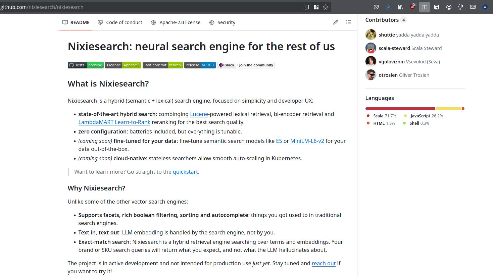
- Open-source hybrid search engine
- S3/blockstore based storage
- Can fine-tune to your data
Agenda
🚀
- How does this vector/semantic search work?
- Relevance, semantics and intent
- Contrastive learning
- Does this work in practice?
Product search in Q-Commerce
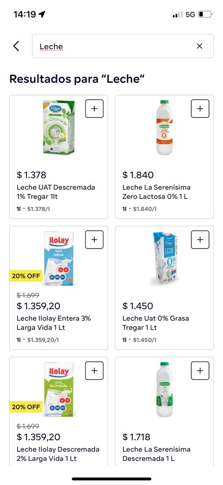

|
Multi-token, long tail queries 🔴 |
Precision vs Recall

- coca AND cola AND zero: zero results
- coca OR cola OR zero: matches pepsi
- coca AND cola AND (zero OR light): good luck
Lexical search
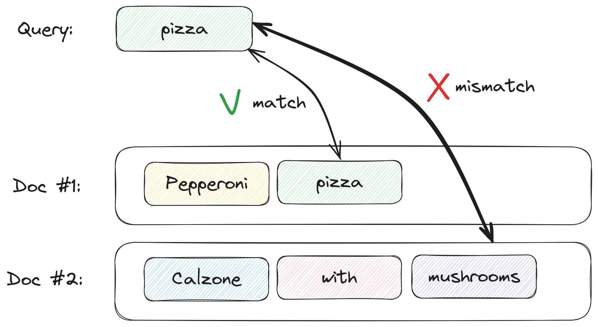
- Pros: fast, many implementations
- Cons: lacks query understanding
Lexical: sparse retrieval
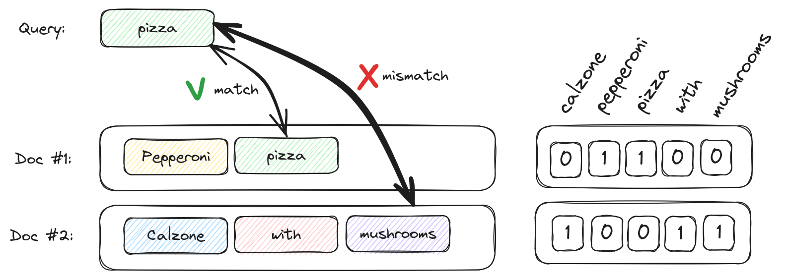
- Bag-of-words sparse vectors: high dimentionality
yay semantic search!

- Embed documents with SBERT/OpenAI
- Install a Vector© Search® Database™ 🚀
- ...
- PROFIT
Vectors in vector search
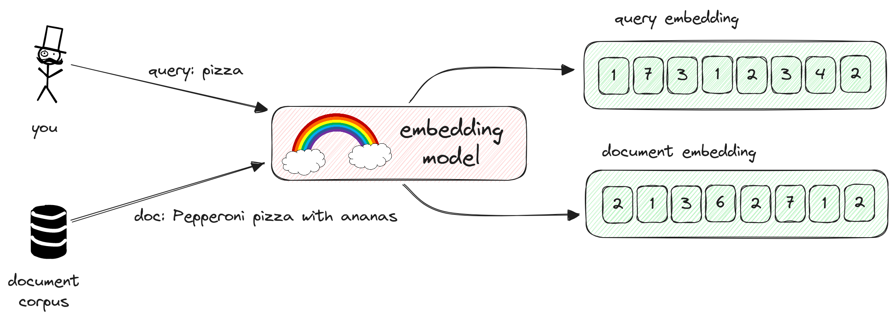- Embedding: text -> float[] mapping
BERT embeddings
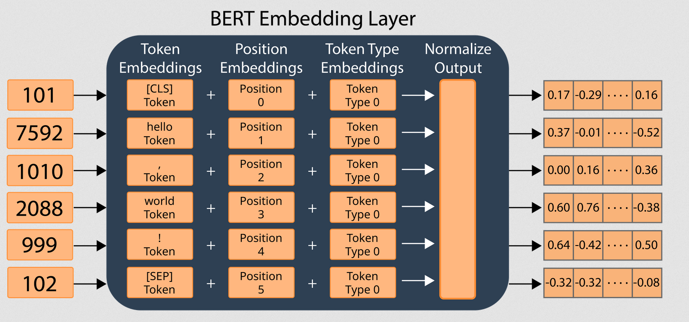- Great for masked token prediction
- Not so great for search. Why?
Embedding models for search

- MTEB leaderboard: model eval over 8 tasks
- MTEB retrieval: search over BEIR dataset collection
BEIR benchmark
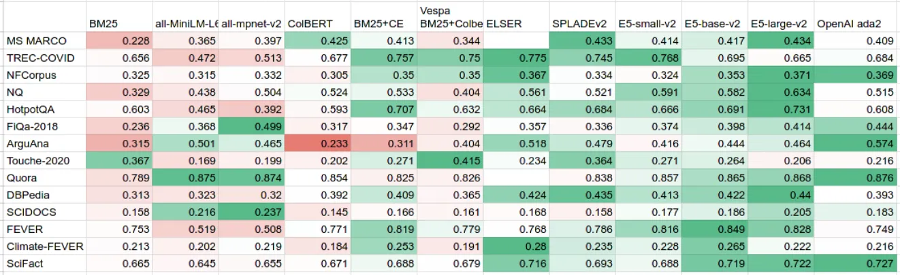- 14 datasets, query+positive tuples
- zero-shot: at least in theory
Search in vector search

- Similar query-document pairs have high similarity score
- Similarity score: cosine or dot-product
Search in vector search
Main perk: all documents can be embedded offline
Exact vs approximate search
What if you have 1M products? 🤔
- Exact: cosine between query and 1M products
- Approx: HNSW, DiskANN - not exact but fast
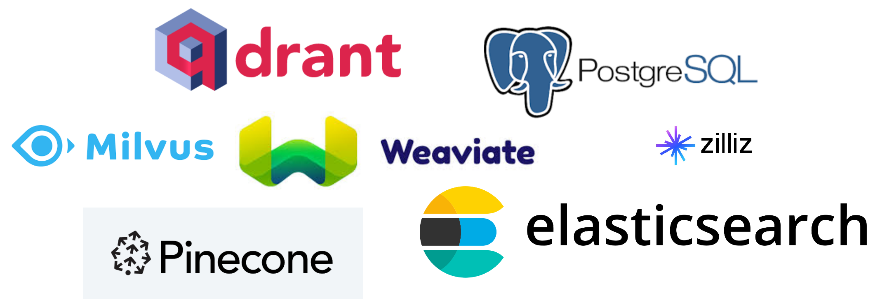
OK you have embedding and vector search
now what?
Semantics and intent

"tomato" query: what is relevant?
Semantics and intent
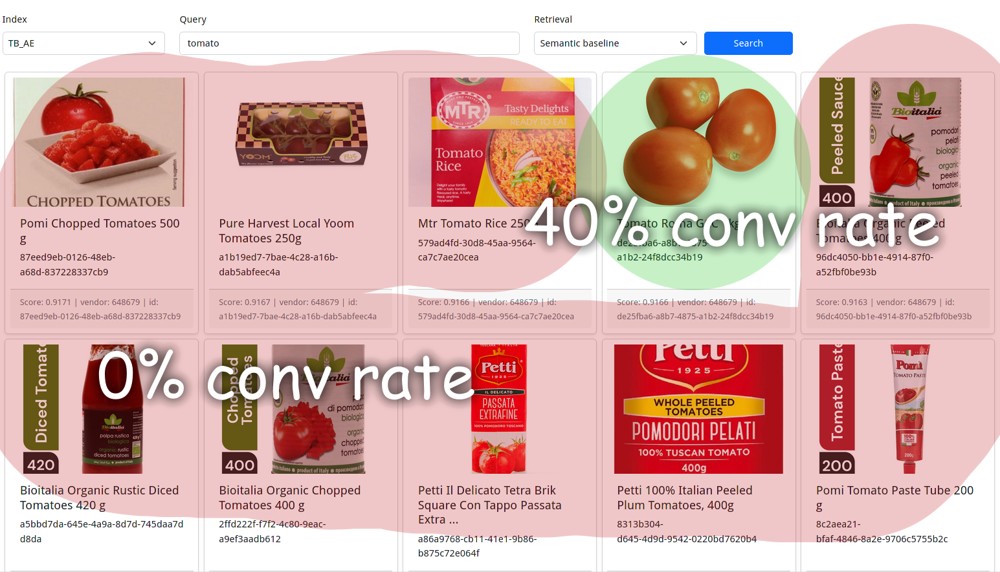Not all tomatos are equal!

- Relevance is subjective: depends on intent
- Embedding model: no idea about your audience
Relevance depends on intent?
Off-the-shelf zero-shot embeddings:
- 🚀 Great at generalizability: works okey with any data
- 💔 Have no idea about intent of your customers
Do we need to stay zero-shot?
- 80% of queries are repeated
- document corpus is mostly the same
Fine-tuning
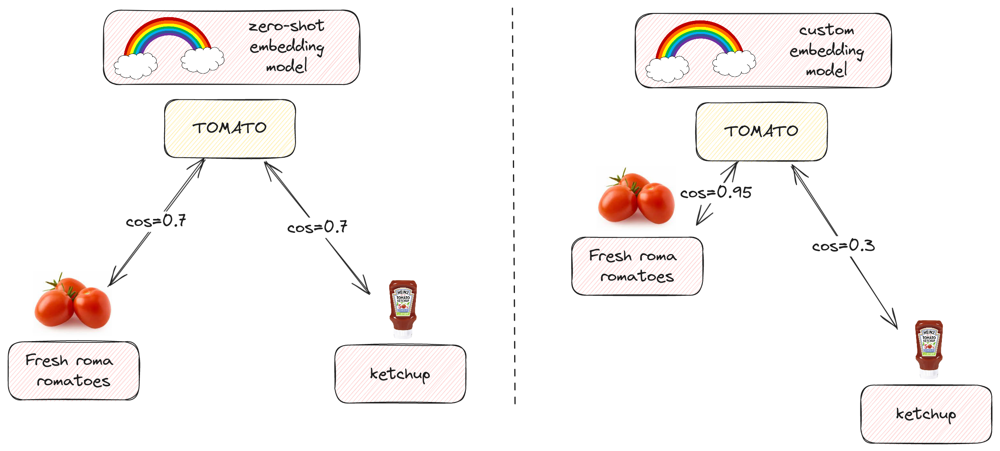
- Relevant docs: make them closer to query
- Irrelevant docs: make them further from query
What is positive and negative?

- 1 click, 3 impressions = 33% CTR?
Mixing clicks and confidence

- Bayes correction: mix prior and posterior
- Low confidence: strong shift to avg
- High confidence: almost no shift to avg
[1]: Haystack US22: R.Kriegler, Modelling implicit user feedback for optimising e-commerce search
Bayes corrected CVR as label

Bayes corrected CVR as label
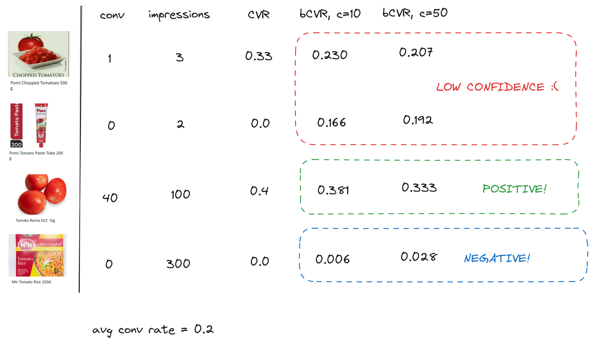
Training: SBERT
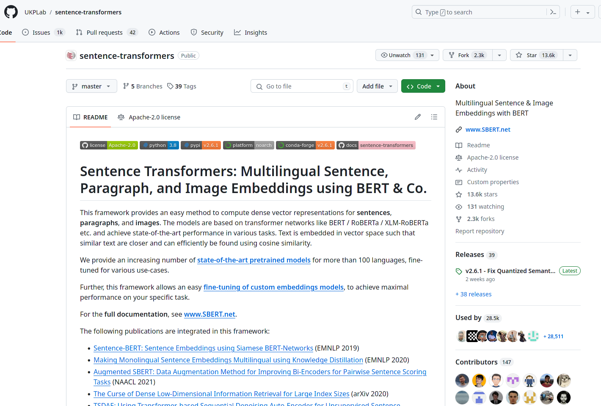Example code
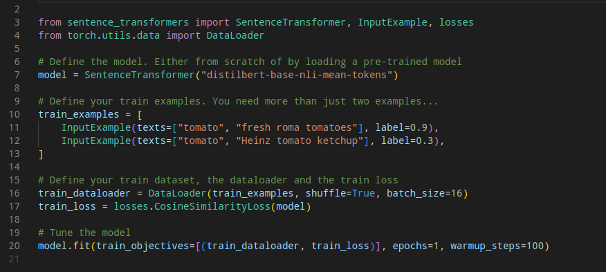Data preparation
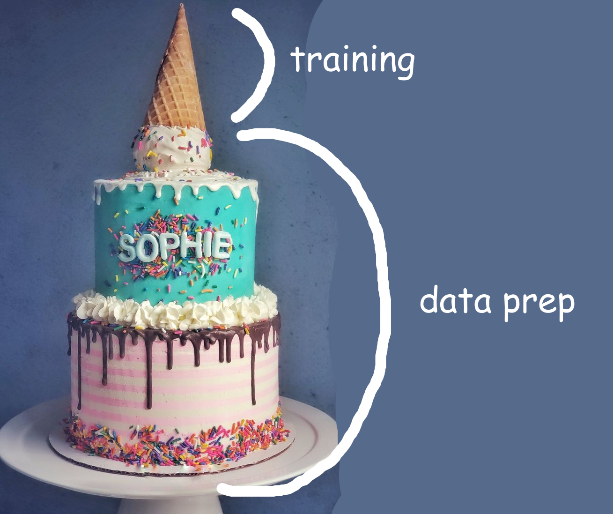Nixietune
- Front-end for SBERT and HF Trainer
- Stable JSON data format
{
"seq_len": 128,
"target": "triplet",
"train_dataset": "nixiesearch/amazon-esci",
"eval_dataset": "nixiesearch/amazon-esci",
"model_name_or_path": "intfloat/e5-base-v2",
"per_device_train_batch_size": 512,
"per_device_eval_batch_size": 512,
"eval_metrics": ["ndcg@3", "ndcg@5", "ndcg@10"],
"query_prefix": "query: ",
"document_prefix": "passage: "
}
Nixietune data format
query + positive + negatives (0+)
{
"query": "tomato",
"doc": "Tomato Round Local 1kg",
"neg": [
"Heinz- Tomato Ketchup | 600 ml",
"Jacker Tomato Flavour Potato Crisps | 100g",
"Red Potato | 500 g",
"Kochur Mukhi | 500 g",
"Ahmed Tomato Sauce 340 g - 5000000162"
]
}
Example code
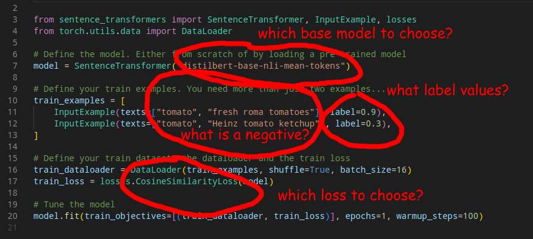Base models
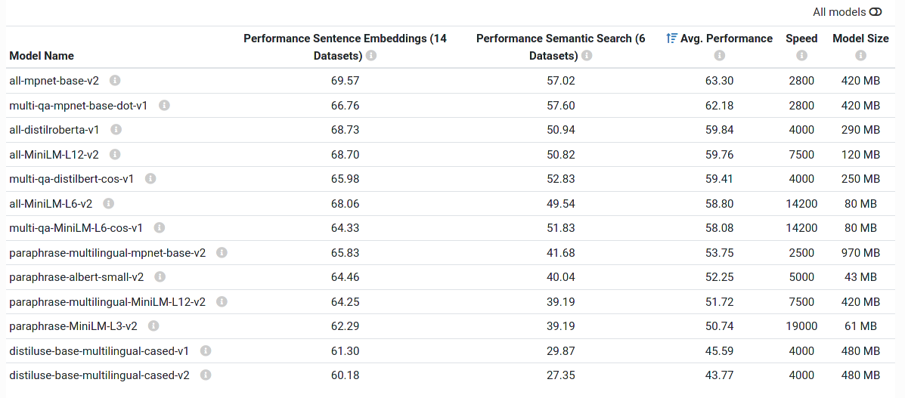- SBERT pre-trained models
- Models from MTEB leaderboard
- Old good bert-base-uncased
Amazon ESCI: Guinea pig dataset
github.com/amazon-science/esci-data
- 48k queries (29k EN, 9 ES, 10 JP)
- 1.1M relevance labels:
Exact, Substitute, Complement, Irrelevant - Not yet leaked to top models in MTEB leaderboard
Which base model to choose?
Experiment: take flavors of bert-base-uncased and fine-tune
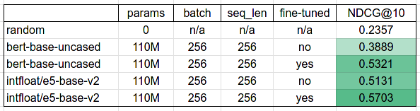
Learning #1: pre-trained models are a good starting point
Does size matter?
Experiment: is small/base/large size affects NDCG?
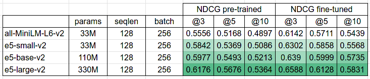
Learning #2: the larger - the better
Size vs speed
Experiment: is small/base/large slow on CPU?
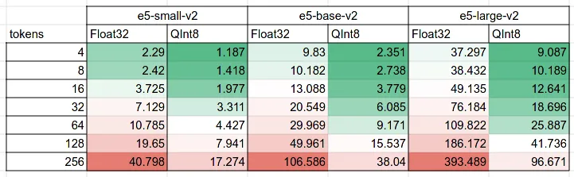
Learning #3: the larger - the slower
[1] - Nixiesearch blog - Faster embeddings with ONNX quantization
The loss function
- Loss function: metric we optimize for

- "Yeah let's have NDCG as a loss" - it should be differentiable
Loss functions
SBERT has 24 losses, which one to choose?
- CosineLoss: query-document-label, float label
- Contrastive: query-document-label, binary label
- TripletLoss: query-positive-negative
- MultiNegsRankingLoss: query-positive
- MultiNegsRankingLoss*: query-positive-negatives[]
CosineSimilarityLoss
Expects query-document-label triplets
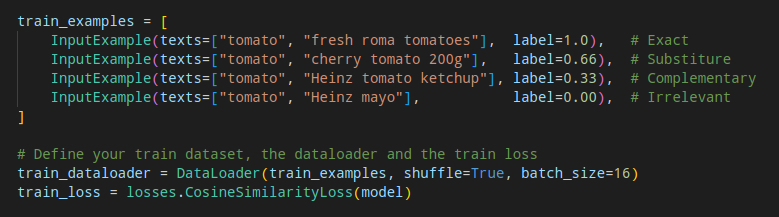Target: cosine
Nixietune: set target
{
"seq_len": 128,
"target": "cosine",
"train_dataset": "nixiesearch/amazon-esci",
"eval_dataset": "nixiesearch/amazon-esci",
"model_name_or_path": "intfloat/e5-base-v2",
"per_device_train_batch_size": 512,
"per_device_eval_batch_size": 512,
"eval_metrics": ["ndcg@3", "ndcg@5", "ndcg@10"],
"query_prefix": "query: ",
"document_prefix": "passage: "
}
Passing scores
{
"query": "tomato",
"doc": "Tomato Round Local 1kg",
"score": 1.0,
"neg": [
"Heinz- Tomato Ketchup | 600 ml",
"Jacker Tomato Flavour Potato Crisps | 100g",
"Red Potato | 500 g",
"Kochur Mukhi | 500 g",
"Ahmed Tomato Sauce 340 g - 5000000162"
],
"negscore": [0.6, 0.4, 0.2, 0.1, 0.0]
}
CosineSimilarityLoss
But what is label value?
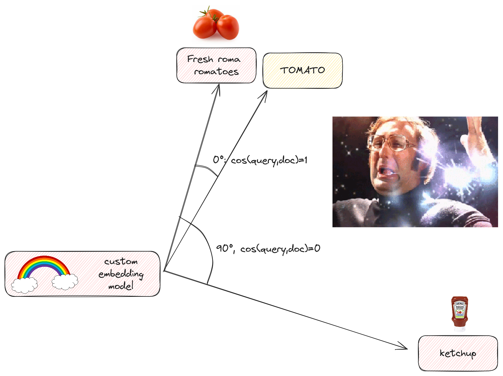
- Too many orthogonal vectors
CosineSimilarityLoss
Cosine scores: expectation vs reality

- Expected 0.0, got 0.8 = huge error
Cosine shape depends on training
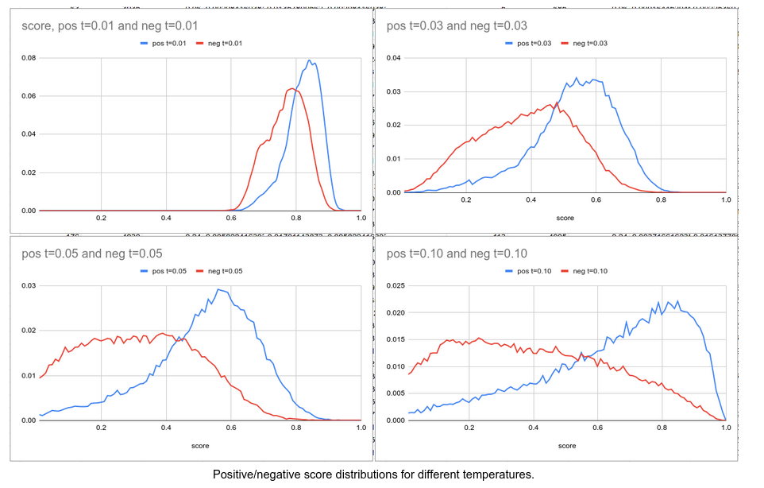
- Learning #3: relevance is a spectrum
Relevance is a spectrum
But what about our training data?
- Chopped tomatoes 500g
- Makita Power Drill 2KW - more negative?
Contrastive and Triplet losses
- Contrastive: query-document-label, binary label
- TripletLoss: query-positive-negative
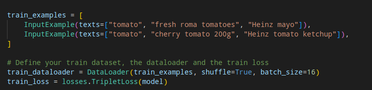
- No explicit zero/one labels
- Push positives close, and negatives far
ContrastiveLoss
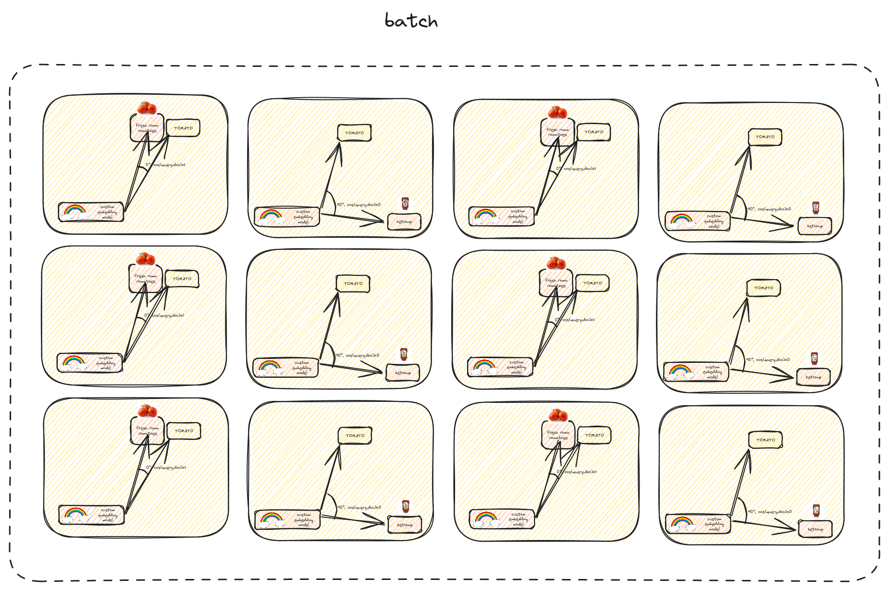
TripletLoss
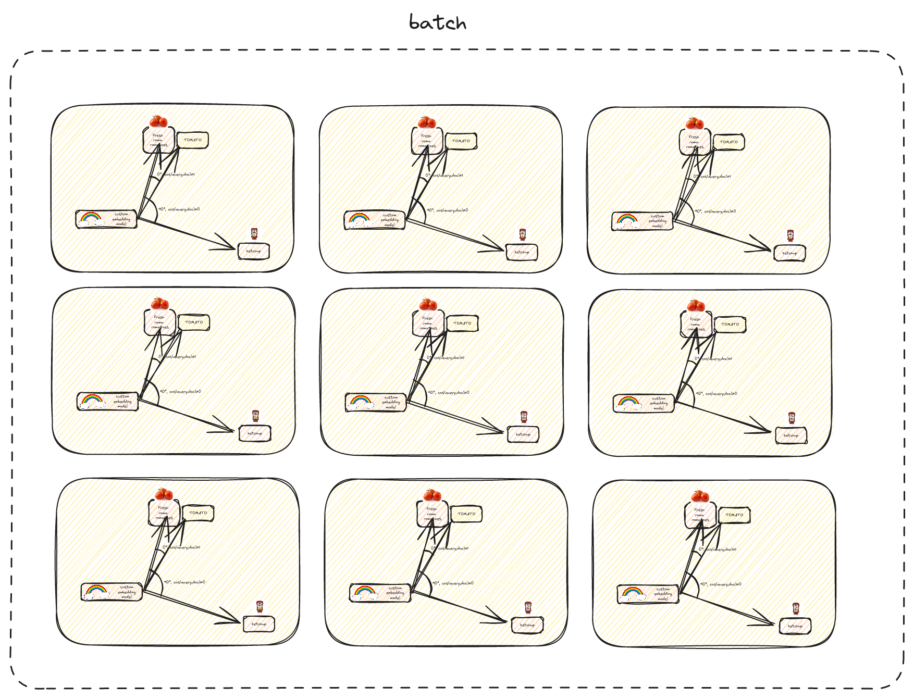
Batch size
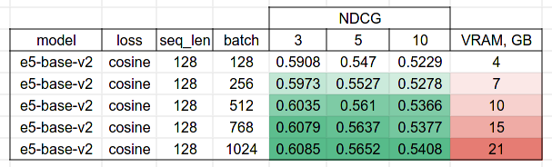
- 🤔 Larger batch size = better the NDCG
- 😢 At 1024 we maxed out VRAM
Let's help Dora find a better way
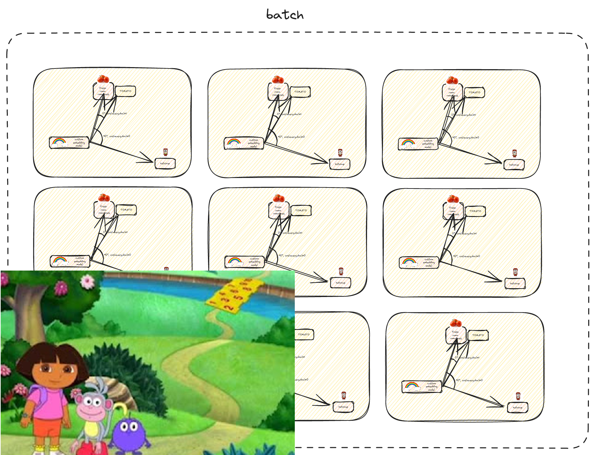
Let's help Dora find a better way
- Hint: how many negatives are there for sample #1?
More than one: in-batch negatives!
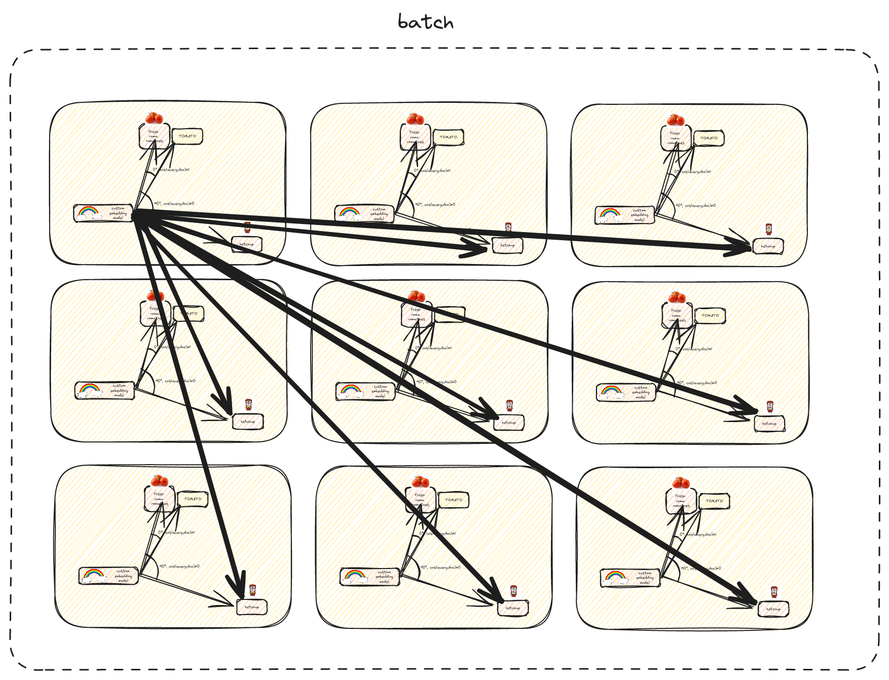
InfoNCE loss
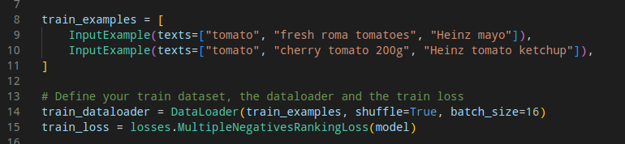
- Contrasts query+positive over all in-batch negatives
- Option: contrast over in-batch positives as negatives
Target: infonce
Nixietune: set target
{
"seq_len": 128,
"target": "infonce",
"num_negatives": 1,
"train_dataset": "nixiesearch/amazon-esci",
"eval_dataset": "nixiesearch/amazon-esci",
"model_name_or_path": "intfloat/e5-base-v2",
"per_device_train_batch_size": 512,
"per_device_eval_batch_size": 512,
"eval_metrics": ["ndcg@3", "ndcg@5", "ndcg@10"],
"query_prefix": "query: ",
"document_prefix": "passage: "
}
InfoNCE vs others

Majority of MTEB leaderboard are trained with InfoNCE loss
- Learning #4: more data = better
Does this work in practice?
Case: food search
A/B test: Control vs Hybrid for 2+ tokens
| Region | GMV | Orders | Clicks | Click pos | ZRR |
| SA | +3.9% | +1.6% | +4.2% | -3.4% | N/A |
| UAE | +0.7% | +0.7% | +2.5% | -2.4% | -40% |
| APAC | +1% | 0% | +1.2% | -1% | -27% |
| Turkey | +0.6% | +0.4% | +1.14% | 0% | N/A |
| Latam | 0% | 0% | +0.5% | 0% | -12% |
Case: electronic parts
Tough case: huge vocab mismatch
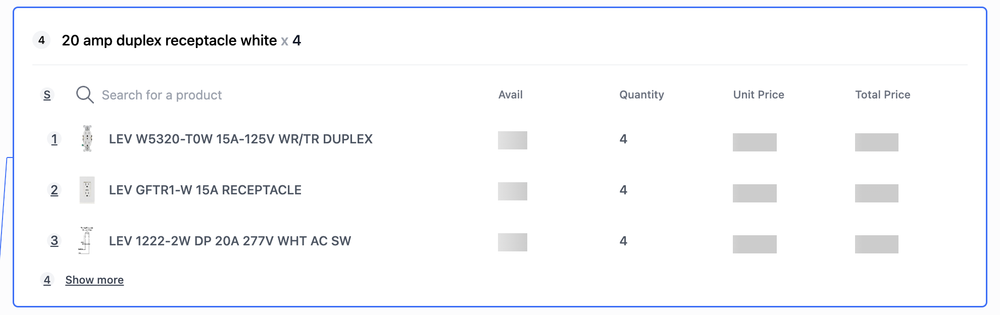
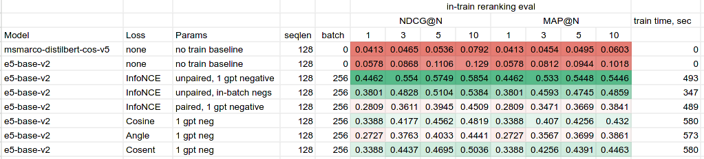
TLDR: NDCG@10 jump from 0.13 to 0.58
Does it work? (yes/no)

- Depends on baseline: tough to beat well-built lexical search
- Focus on recall: use reranking for precision
- Should you fine-tune: yes
Final words
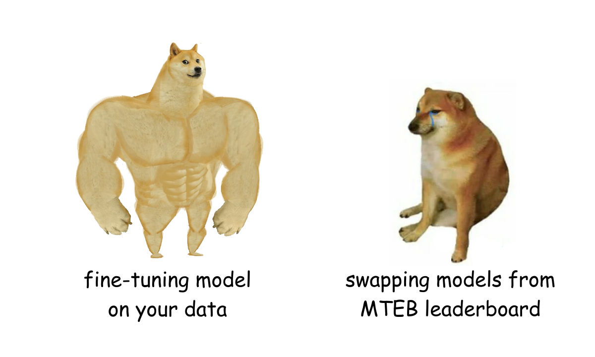
- Fine-tuning is easy with SBERT/nixietune
- FT gains >> swapping models
Links
- Nixiesearch: github.com/nixiesearch/nixiesearch
- Nixietune: github.com/nixiesearch/nixietune
- Linkedin: linkedin.com/in/romangrebennikov/